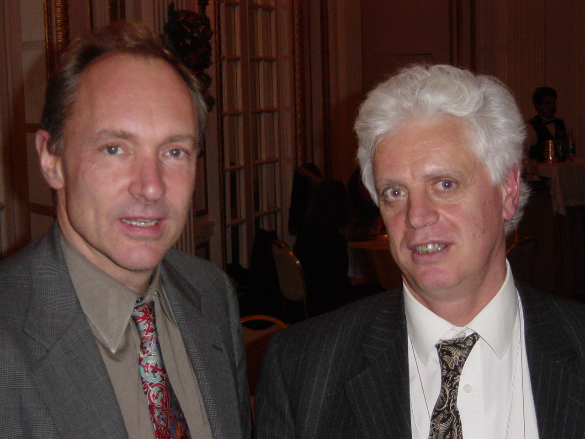

World Wide Web Consortium (W3C)

“To lead the World Wide Web to its full potential
by developing protocols and guidelines that ensure
long-term growth for the Web”
- Fondato da Tim Berners-Lee in 1994
- Definisce Recommendation aperte (Web
Standards)
- Svolge attività di formazione, sviluppa linee
guida…
-
È un forum neutrale per creare consenso
sugli standard web
- Gli standard proposti non derivano da posizioni
dominanti sul mercato
W3C: gli obiettivi a lungo termine

-
Web for Everyone
- indipendentemente da hardware, software,
infrastruttura di rete, lingua madre, cultura,
posizione geografica, capacità fisiche o
mentali, …
-
Web on Everything
- non solo PC, ma anche Cellulari, PDA,
Televisione,…
-
Knowledge Base, Advanced data
searching and sharing
- informazione utilizzabile da esseri umani e
anche macchine
-
Trust and Confidence
- tecnologie per un ambiente collaborativo
- un Web con identificazione delle
responsabilità, sicurezza, fiducia,
riservatezza
In principio fu: Vannevar Bush e il Memex
1945: As We May Think (Atlantic Monthly)


A memex is a device in which an individual stores his
books, records and communications and which is mechanized
so that it may be consulted with exceeding speed and
flexibility. It is an enlarged intimate
supplement to his memory.
The memex "affords an immediate step, however, to
associative indexing, the basic idea of which is
a provision whereby any item may be caused at will to
select immediately and automatically another. This is the
essential feature of the memex. The process of tying
two items together is the important thing."
L’invenzione del web
-
Non un Eureka
-
Non la mitica mela di Newton
- La potenza di combinare le idee in modo
libero ("weblike") ...
- Risposta a una sfida
- Combinazione di idee e realizzazioni da parte anche
di molti altri
- Finalmente una nuova idea
Un processo di accrescimento, non la soluzione
lineare di una serie di problemi ben definiti.
Alcuni riferimenti:
ENQUIRE: qui puoi trovare tutto ...
I genitori di Tim Berners-Lee avevano una copia del
libro di epoca Vittoriana. Tim ne aveva ricevuto un'
altra copia in regalo dal suo padrino.
Staying in a House without Staff
It is for the guest to be as unobtrusively helpful to
host and hostess. The simplest thing is to ask exactly
how you may do this and also remember that there are
times when even the most saught-after guest may get in
the way of the routine domestic chores - it is often
easier, for example, to opt for breakfast in bed while
the hostess copes with the early morning routine.
In any household (even that of a millionaire), the
thoughtful guest does not make free with the
establishment's drinks, cigarettes, postal and
telephone facilities, nor does he or she demand
numerous additional services from the staff.
World Wide Web: la proposta originaria
Nel 1989 Tim Berners-Lee propose il World Wide Web

Tre concetti essenziali
-
URI
-
Universal Resource Identifier: cosa significa
come indirizzo.
È l' innovazione più
fondamentale del Web.
Qualunque programma Web lo utilizza quando segue un
link.
Una volta che un documento ha un URI, può essere
memorizzato su un server e ritrovato
da un browser.
Non esiste un archivio centralizzato di URI.
-
HTTP
-
Hypertext Transfer Protocol: la sequenza con
cui i computer interagiscono e si scambiano
informazioni.
La format negotiation permette la coesistenza
di tutti i tipi di formato.
-
HTML
-
Hypertext Markup Language: se due computer
usano lo stesso software per rappresentare i dati,
possono scambiarli in modo nativo, altrimenti, li
possono tradurre in HTML.
HTML descrive la struttura, non la
presentazione.
Come talvolta succede …

Hypertext91
- Il lavoro viene rifiutato
- Almeno uno dei revisori afferma che: il sistema
proposto viola i principi architetturali su cui si basano
tutti i sistemi ipertestuali
- Riesce a ottenere la possibilità di dare una
dimostrazione
- Non tutti comprendono il fattore di scala
Una riflessione
“ The people who built the Internet and Web have
a real appreciation of the value of
individuals and the value of systems in which
individuals play their role, with both a firm sense of
their own identity and a firm sense of some common
good.
[…]
I was very lucky, in working at CERN, to be in an
environment that Unitarian Universalists and physicists
would equally appreciate: one of mutual
respect, and of building something very great
through collective effort that was well beyond
the means of any one person - without a huge
bureaucratic regime.
[…]
The system produced a weird and wonderful machine,
which needed care to maintain, but could take advantage
of the ingenuity, inspiration, and
intuition of individuals in a special way.
That, from the start, has been my goal for the
World Wide Web. ”
(Tim Berners-Lee - Weaving the Web, p. 208-209)
I limiti attuali
- Nel web tradizionale si rappresenta l'
informazione utilizzando:
- linguaggio naturale
- grafica, elementi multimediali, struttura della
pagina
- Spesso è necessario combinare le
informazioni (provenienti da fonti diverse)
-
Per gli esseri umani è facile ...
- dedurre fatti da informazioni incomplete
- creare e seguire associazioni mentali
- provare varie esperienze sensoriali
- aggregare le informazioni indipendentemente dalle
tecnologie utilizzate
- ... ma le macchine non sono intelligenti!
- non possono utilizzare informazioni parziali
- hanno difficoltà ad aggregare informazioni
strutturate in forma diversa
I have a dream ...
"The entertainment system was belting out the Beatles "We
Can Work It Out" when the phone rang. When Pete answered,
his phone turned the sound down by sending a message to
all other local devices that had a volume
control. His sister, Lucy, was on the line from the
doctor's office: "Mom needs to see a specialist and then
has to have a series of physical therapy sessions.
Biweekly or something. I'm going to have my agent set up
the appointments." Pete immediately agreed to share the
chauffeuring.
At the doctor’s office, Lucy instructed her
Semantic Web agent through her handheld Web
browser. The agent promptly retrieved
information about ...”
(From: The Semantic Web, by Tim Berners-Lee, James
Hendler and Ora Lassila, Scientific American, May 2001)
Il Semantic Web ...

- è un' infrastruttura basata su metadati per
poter svolgere ragionamenti sul Web
-
estende, non sostituisce il web attuale
Cosa sono i metadati?
- Informazioni, elaborabili automaticamente
(machine understandable), relative a una risorsa
web o a qualche altra cosa
- ... data about data
- ... informazioni che possono essere utilizzate da
intelligent software agents per fare un uso
appropriato delle risorse
- ... dati ...
- ... che possono essere descritti da altri
metadati ...
Perché i metadati?
- Nel Web di oggi tutte le informazioni sono
"machine readable"
- Nel Semantic Web le informazioni devono essere "
machine understandable". Quindi occorrono:
-
nomi non ambigui per le risorse (URI)
- un data model condiviso per esprimere i
metadati (RDF)
- un modo per accedere ai metadati sul Web
-
vocabolari condivisi (ontologie)
Il Data Model RDF: gli statement
Il concetto fondamentale:
-
Statement: una tupla di un
subject (o resource), un predicato (o
proprietà) e un value (o object).
Una risorsa è sempre individuata da un
Universal Resource Identifier (URI), e
può essere:
- una pagina web
- una parte di pagina web
- un elemento XML all' interno del documento sorgente
- una collezione di pagine web
- un oggetto non direttamente accessibile sul web
(libro, dipinto, oggetto, ...)
Un esempio di statement
La persona identificata dal Codice
Fiscale SGNRST99A99X111Y has Name Oreste Signore, Email
oreste@w3.org, e Affiliation C.N.R.. La risorsa
http://www.w3c.it/Oreste/DocX has Author questa
persona.
Un esempio: un oggetto d' arte
La sua rappresentazione basata su una ontologia
formale
(ringrazio Giovanni Tummarello):

Grafi e Web: prima di RDF
Per le macchine: milioni di risorse collegate
...
... nessuna informazione sul tipo di risorse e di
relazioni
Grafi e Web: dopo RDF
Per le macchine: milioni di risorse collegate
...
... con informazioni sul tipo di risorse e di
relazioni
RDF : un linguaggio per descrivere il
significato delle risorse
È possibile ricercare le risorse in
base alle loro proprietà
Ontologie
- Il Semantic Web ha bisogno di
ontologie:
"definisce i concetti e le relazioni usate per
descrivere e rappresentare un dominio di
conoscenza"
- Serve quindi un Web Ontologies Language per
definire:
- la terminologia usata in un contesto specifico
- vincoli e proprietà
- le caratteristiche logiche delle proprietà
- l' equivalenza dei termini tra le varie ontologie
- etc.
- Il linguaggio deve essere un compromesso tra:
- ricchezza semantica
- fattibilità, implementabilità
Web Ontology Language (OWL) è la W3C
Recommendation
Ontologie sul Web
- Le ontologie sono sul Web. Quindi:
- le applicazioni possono utilizzare varie
ontologie differenti, oppure ... ...
- ... le stesse ontologie, ma espresse in lingue
diverse
- le equivalenze tra termini, e le relazioni
intercorrenti tra di loro, sono un problema non
banale
Il Semantic Web (ricapitolando)
- Interazione machine-to-machine
- Intelligent software agents
- Metadati
- Decentralizzazione
- Armonizzazione delle ontologie
- Reasoning
- Interoperabilità semantica
- Fiducia
- Searching the Web
- …
Molte delle tecnologie necessarie sono già
disponibili
La conoscenza può essere espressa ed esportata
utilizzando un formalismo interoperabile
Alcuni problemi
-
Ontologie
-
- definizione
- condivisione
- armonizzazione
-
Grafi RDF
-
- memorizzazione
- query
- autenticazione (signing graphs)
- ripudio
-
Trust
-
Solo un sogno?
- Il Semantic Web è un settore di
ricerca …
- … ma non solo: le sue tecnologie di
base sono già utilizzate in molte applicazioni
reali (in produzione)
- Ignorare questo settore potrebbe significare restar
fuori dagli sviluppi innovativi
Web for Everyone
-
Valore sociale del Web: comunicazione
interpersonale, commercio, condivisione di conoscenza
- Rendere questi benefici disponibili a tutti,
indipendentemente da hardware, software, infrastruttura
di rete, lingua madre, cultura, posizione geografica,
capacità fisiche o mentali
- W3C investe per supportare l' estensione delle
tecnologie web e dei relativi benefici.Web
accessibility, internazionalizzazione, device
independence sono particolarmente importanti.
“The Web is more a social creation than
a technical one. I designed it for a social effect - to
help people work together - and not as a
technical toy. The ultimate goal of the Web is to
support and improve our weblike existence in
the world.”
(Tim Berners-Lee - Weaving the Web, p. 123)
Chi è il padrone del Web?
People have sometimes asked me whether I am upset that I
have not made a lot of money from the Web. In fact, I
made some conscious decisions about which way to take my
life. These I would not change - though I am making no
comment on what I might do in the future. What does
distress me, though, is how important a question it seems
to be to some. This happens mostly in America, not
Europe. What is maddening is the terrible notion that
a person's value depends on how important and financially
successful they are, and that is measured in terms of
money. That suggests disrespects for the researchers
across the globe developing ideas for the next leaps in
science and technology.
Core in my upbringing was a value system that put
monetary gain well in its place, behind things like
doing what I really want to do. To use net worth as
a criterion by which judge people is to set out our
children's sights on cash rather than on things that will
actually make them happy.
It can be occasionally frustrating to think about things
my family could have done with a lot of money. But in
general I'm fairly happy to let other people be in the
Royal Family role (as it were), as long as they don't
abuse the power they have as a result. It's not as
if I can just make decisions that change the Web ... but
I can try to get an entire industry to do it. My priority
is to see the Web develop in a way that will hold us in
good stead for a long time. If someone tries to
monopolize the Web - by, for example, pushing a
proprietary variation of network protocols - they're in
for fight.
[da Weaving the Web, p. 107-108]
Sono orgoglioso di ...

Tim Berners-Lee e Oreste Signore al decennale del W3C
(Boston, dicembre 2004)
Conclusioni
- Il web nasce in un ambiente di ricerca
- Il web si è diffuso con una velocità
incredibile
- Motivazioni tecniche e umane
- Problemi tecnici e concettuali
- Il Web è un ambiente collaborativo
- Gli obiettivi del W3C sono coerenti con i principi
del WSIS per la creazione della knowledge
society
- Adeguarsi (e partecipare) significa essere in
anticipo sui tempi e salvaguardare gli
investimenti
-
Attori o spettatori?
Non chiedetevi:
cosa può fare il web per
me?
…ma…
cosa posso fare io per il
Web?
 … e il supporters
program
… e il supporters
program


{kind=link}